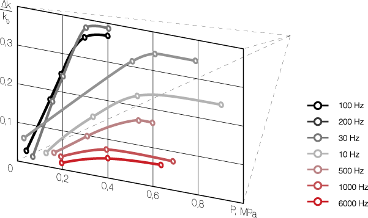
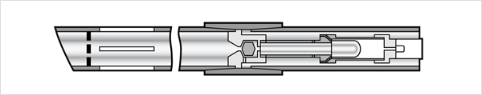
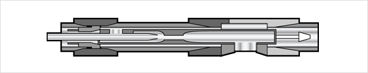

Main problem solution
Using pressure oscillation generators with the subsequent use of the polymer increases the oil well productivity and allows to reanimate the wells even in abnormal conditions of field development.
Technology use process
- Developing and improving well productivity using airlift pumps.
- Wells cleansing in combination with the polymer injection.
- Cavern accumulation in carbonate collectors.
- Water and chemical reagents injection intensifying into injection wells.
- Thermal, gas and depression-wave impact.
- Water-supply wells filters cleansing.
- Water consumption and under-packer formation pressure measurement. Examining the productive formation bottom hole zone level of permeability recovery on the basis of the well flow rate increment value under a specified pressure of the formation water.
Polymer injection process
- Equipment is being descended on the process pipe tubing that includes the airlift pump, the pressure oscillation generator, the development clutch and the manometer.
- Bottom hole formation zone cleansing is being performed before the polymer injection.
- Using pressure oscillation generators polymer is being placed in the well. This allows the selective injection it into low-permeable formations and also using this technology in oil wells without intake capacity.
- Injection of polymers in the vibration mode is being performed – the polymer durability in the formation will increase due to volumetric adhesion.
- A complex of geologic measures is being performed after polymerization.
Equipment — Vibrogenerator
Oil well fluid vibrowave generator.
Generator code: "Гвж"
Working fluid flow rate, dm³/s: 4,5—5,0
Working pressure fall, MPa: 9,5
Pressure fluctuation amplitude range (taking into account the resonator), MPa: 5,0—6,0
Minimal diameter for tubing installation, mm: 73
Length, m: 1,27
Weight, kg: 9,5
Purpose: Treatment of oil wells revealing carbonized and mudded formations of up to 2000 meters deep.

Equipment — Pump
Oil well jet pump.
| Jet pump code | "ИС–3" | "ИС–1" |
| Maximum oil well depth, m | 6000 | 2500 |
| Maximum operating pressure, MPa | 50 | 25 |
| Maximum diameter, mm | 89 | 54 |
| Length, m | 0,6 | 0,6 |
| Weight, kg | 15 | 12,5 |

The polymer
PGCP (Prometheus Group Chemicals Polymer) — is a unique advantage when working in conditions of high salinity and high temperatures, in which others simply do not work.
Advantages of PGCP:
- Exceptional resistance to thermal hydrolysis;
- Excellent versatility;
- Is applicable in a wide temperature range;
- Crosslinks with metal ions or organic systems;
- Instant crosslinking when used in the bottom hole formation zone;
- Slow crosslinking when used in deep treatment on profile modification;
- Excellent displacement stability for stable long-life gels;
- Can be used in salt, sea, formation water, and is highly resistant to pH fluctuations;
- Long-term stability when used under high temperatures.
Results after technology implementation
| Region, oil producing company | Terms of pilot development planning and implementation | Number of wells/operations | including extracting ones | Auxiliary water injection, thousand m³ | Auxiliary oil extraction, thousand tons | Success, % | Effect duration, months |
|---|---|---|---|---|---|---|---|
| ANK (Joint-Stock Oil Company) “Bashneft” | 1996—2010 | 280 | 50 | 10 000 | 260 | 80 | 6—18 |
| AO (Joint-Stock Company) “Purneftegaz” | 2002 | 10 | 5 | 250 | — | 80 | 8—12 |
| AO “Kondpetroleum” | 1999—2005 | 70 | 10 | 4500 | 70 | 75 | 8—20 |
| AO “Urayneftegaz” | 2001—2005 | 6 | 5 | 100 | — | 80 | 6—12 |
| AO “Surgutneftegaz” | 2002 | 15 | 10 | — | — | 80 | 10—15 |
| AO “Yuganskneftegaz” | 2001—2005 | 25 | 10 | 400 | 70 | 80 | > 8—15 |
| AO “Orenburgneftegaz” | 2004—2005 | 7 | 3 | — | — | 70 | > 8—15 |
| OAO (Open Joint-Stock Company) “Tatneft” | 2005—2010 | 284 | 175 | 850 | 300 | 90 | > 8—15 |
| OAO “Lukoil-Permneftegaz” | 2005—2010 | 38 | 22 | — | — | 90 | 10—15 |
| OAO “Ukrneft” | 2007—2010 | 15 | 10 | — | — | 90 | > 12 |
| OA “Aktobe-munaygaz” | 2007—2010 | 10 | 6 | — | — | 80 | 8—12 |
Results after the vibrowave impact
| Oil flow rate / watercut, tons / water percentage | |||||
|---|---|---|---|---|---|
| No. item | No. well/lease | Oil field formation index | Date of processing | Before processing | After processing |
| Development and further development of wells after drilling | |||||
| 1 | 366 g/27 | EM-Egovskoe BK-1 | December 2003 | 4,0 / 15 | 22,0 / 4 |
| 2 | 2331 g/82 | — | September 2004 | 4,0 / 30 | 10,0 / 25 |
| 3 | 2302 g/82 | — | October 2004 | 7,0 / 30 | 18,0 / 10 |
| 4 | 364 g/28 | — | January 2004 | 3,0 / 15 | 10,0 / 3 |
| 5 | 709 g | Arlanskoe С1TUR | August 2007 | 2,0 / — | 6,0 / — |
| 6 | 832 g | Arlanskoe СVI | March 2008 | — | 10,0 / — |
Technology application area
| Wells: | By category | By destination | By hole profile | By design |
|---|---|---|---|---|
| prospecting exploring exploitation | extraction injection | vertical directional horizontal lateral holes | depth from 10 to 5000 m diameter of casing string from 90 to 245 mm and more cased bottom hole uncased bottom hole |
| Reservoirs: | By lithology | By composition | By void type |
|---|---|---|---|
| Terrigenous (porosity >16%, permeability >0.005 mcm²) Carbonate (porosity >10%, permeability >0.01 mcm²) | sandstone aleurolite limestone dolomite | poral fractured mixed |
| Formation fluids: | Oil | Water | Gas | Condensate |
|---|---|---|---|---|
| Viscosity < 40—60 mPa Density 650—980 kg/m³ | mineralized sweet | dissolved free |
| Colmatants: | Inorganic | Organic | Others |
|---|---|---|---|
| clayed salt deposits corrosion products drilling fluids packing cement | resins asphaltenes paraffines bacteria’s vital activity products | reactions products after chemical reagents treatment structured systems emulsions |
Oil wells requirements
Oil wells in which the skin effect shows up in result of the well zone contamination with various clogging compounds. Herewith in order to provide profitability of works it is important to have a sufficient potential reserve of formation energy and efficiency for achieving an after-processing well flow of not less than 5–7 tons per day (for low-productive oil wells).
Depth of productive formations should not exceed 5000 meters with a formation pressure not lower than 30–40% of hydrostatic pressure of liquid column in the well.
Formation should have a net thickness of not less than 3 meters and contain rocks not prone to destruction.
Production wells water cut should not exceed 50%.
Oil wells should be situated outside the fringe zone and the hydrodynamic connection through the formation with the surrounding oil wells would be preferred.
Casing strings of wells should be watertight, have an inside diameter of not less than 90 mm, a quality cement sheath, and have no behind-the-casing flows.